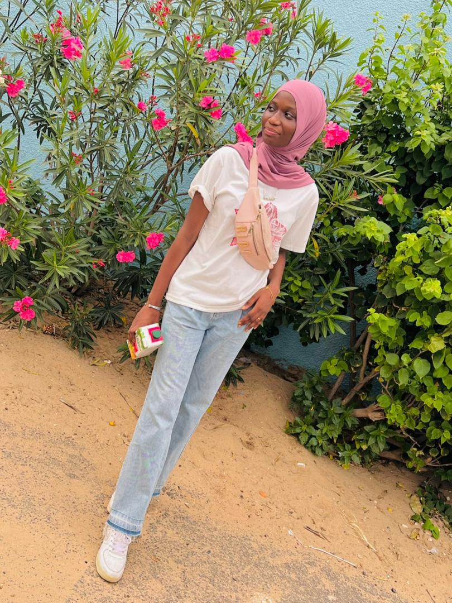
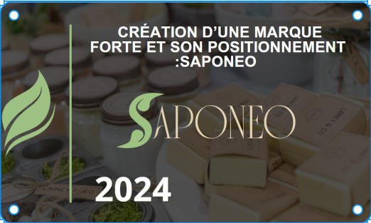
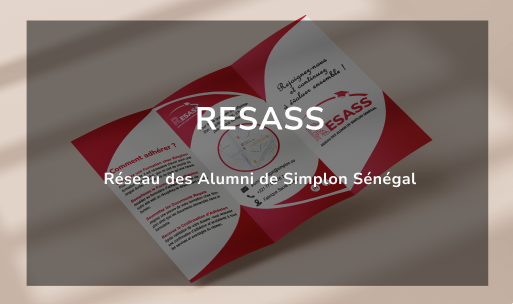

Salut, je suis
Fatou Kiné Fofana


À Propos de Moi
Passionnée par le numérique, je suis actuellement en formation de Référent Digital à Simplon Sénégal. Mon parcours est enrichi d’expériences variées en communication digitale, UI/UX design, marketing digital et gestion de projets agiles. En parallèle, je poursuis une Licence en Communication Digitale à l’Université Numérique Cheikh Hamidou Kane, avec pour ambition de contribuer activement à l’évolution des entreprises à l’ère digitale.
Projets
Projet Marketing digitale
 Création d'un plan de Communication Digital
Création d'un plan de Communication DigitalCréaion d'une identité visuelle
 Crétion de User Story
Crétion de User Story